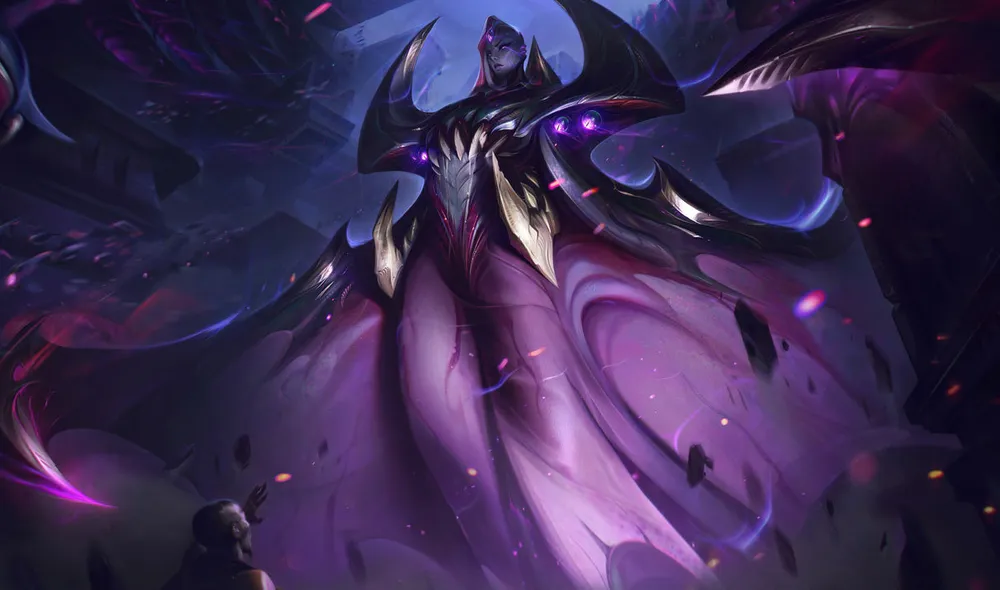
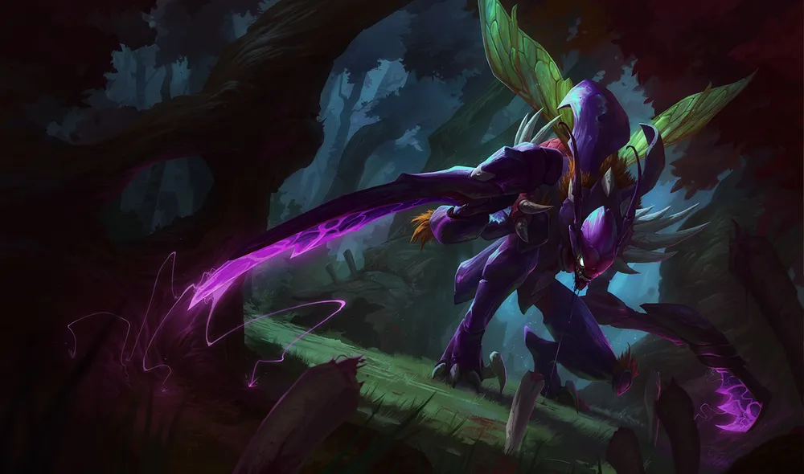
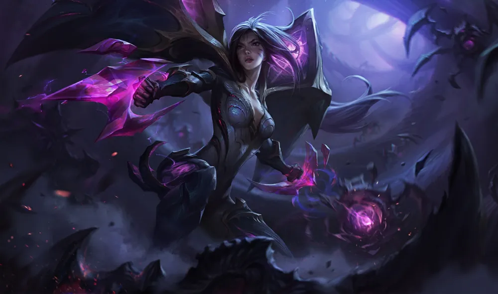
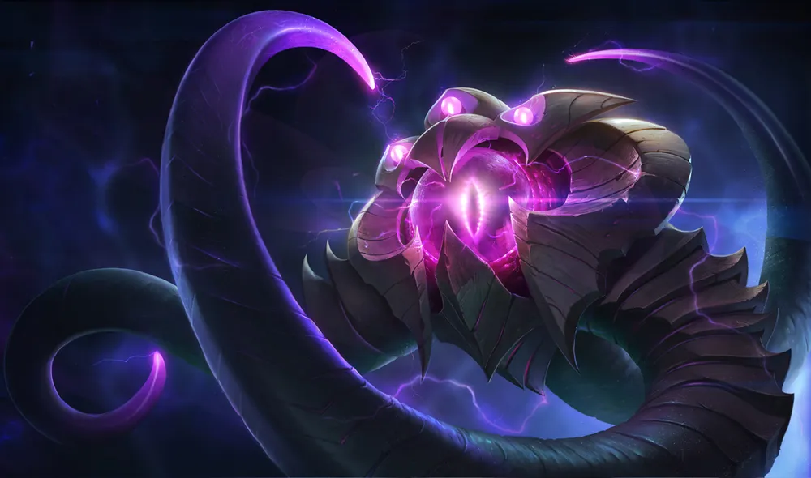
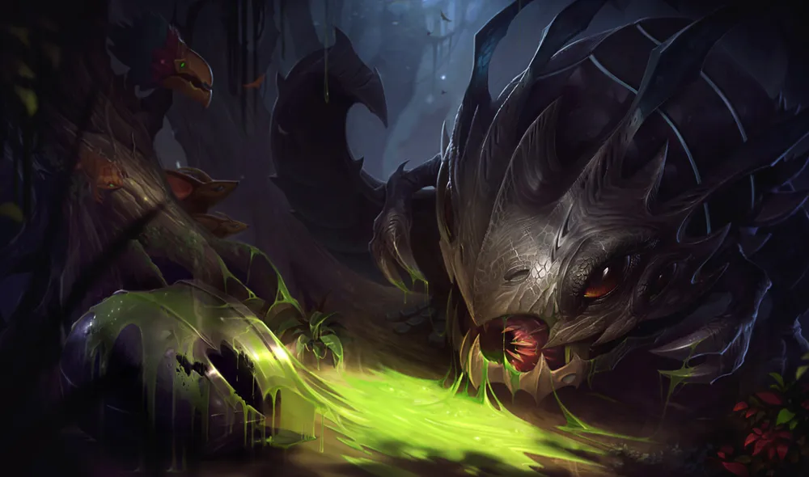
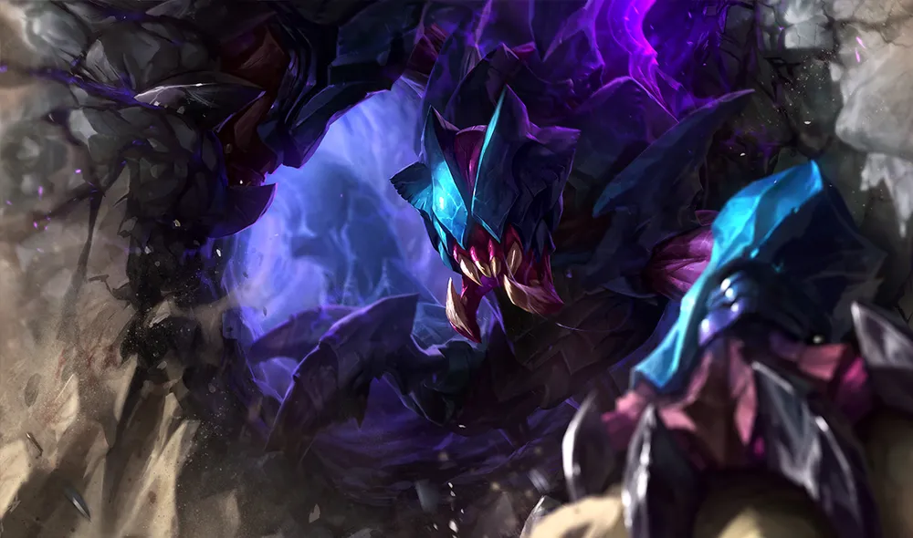
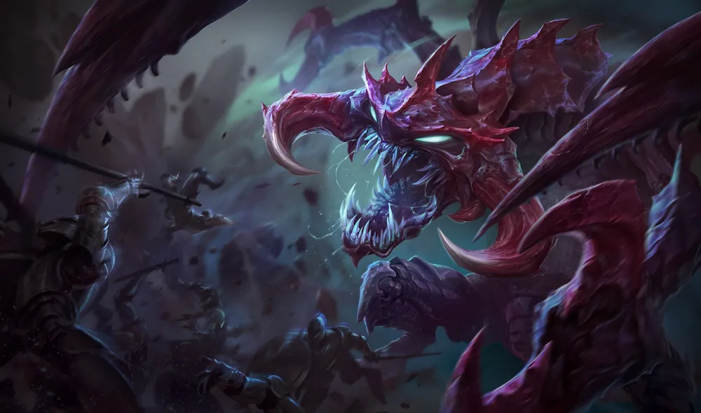

우주가 탄생하던 날, 공허도 함께 생겨났다. 우주 너머에 자리한, 우리가 알 수 없는 ‘무’의 표상으로서 공허는 채워지지 않는 허기의 힘이며,
그 주인인 미지의 주시자들이 마지막 파멸의 시간을 알리기를 기다리며 영겁의 세월을 보내고 있다.
필멸의 존재가 공허의 힘과 접촉하면 영겁의
비현실을 일별한 대가로 극도의 고뇌와 고통을 겪게 되며 제아무리 강인한 영혼의 소유자도 정신이 산산조각이 나 버린다.
공허의 영역에 살고 있는
생명체들은 지각력이 거의 없는 경우가 많으며, 룬테라 전체를 완전한 망각으로 끌어넣는다는 한 가지 목적만을 위해 만들어진 것처럼 보인다.
벨베스

카직스

카이사

카사딘

벨코즈

코그모

말자하

렉사이

초가스
